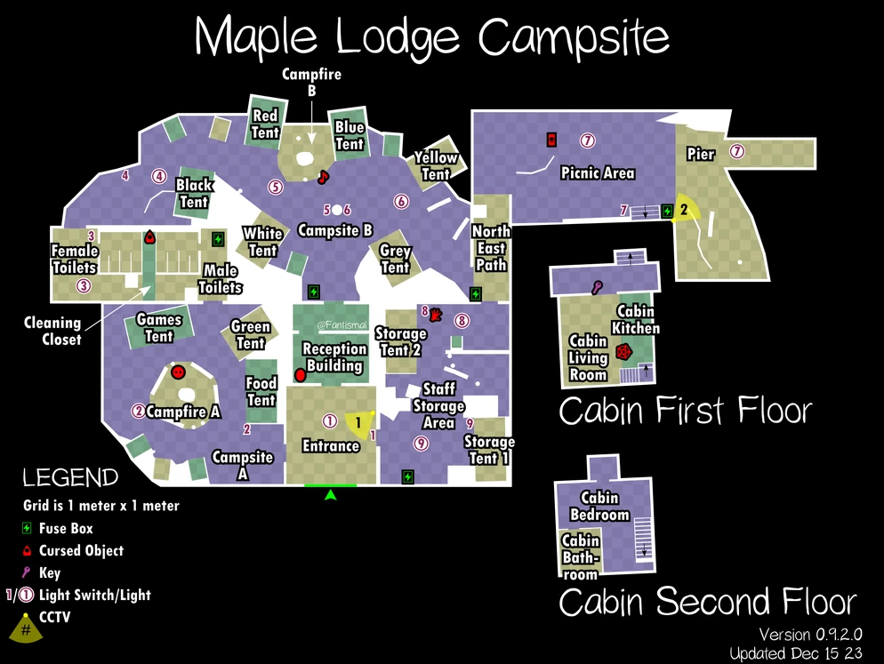

Maple Lodge Campsite
Maple Lodge Campsite — это карта в Phasmophobia, являющаяся второй средней картой в игре и первой локацией преимущественно на открытом воздухе.
Карта представляет собой просторный кемпинг с несколькими палатками, а также зданием для отдыха и двухэтажным домиком рядом с озером.
Её органичная планировка создает резкий контраст с геометрической и более привычной механикой «традиционных» карт для помещений.
Даже более опытные игроки могут оказаться потерянными и сбитыми с толку, поскольку такие вещи,
как поиск любимой комнаты призрака или определение отпечатков пальцев, могут быть не столь интуитивными и требовать более активного поиска.
Кроме того, находясь в основном на открытом воздухе, погода будет играть важную роль во время расследований.
Температуру снаружи каюты нельзя повысить даже включением источника электропитания,
сильный дождь помешает использовать светильники и другие виды открытого огня, в то время как сильный ветер может помешать слышать звуковые сигналы,
такие как бросаемые предметы или голоса призрака во время охоты.
Структура
Укрытия и стратегии
Есть 7 небольших палаток, которые служат укрытиями, а также 3 «санкционированных» укрытия на основе мебели.
В зависимости от сложности некоторые из этих укрытий могут быть заблокированы из-за наличия громоздких предметов или удалены их скрывающие элементы.
- Любитель: нет
- Средняя: ≤ 7
- Профессионал: ≤ 8
- Кошмар/Безумие: ≤ 9
- Игра втроём: +1 открытое укрытие
- Игра вчетвером: +2 открытых укрытия
- Есть несколько мест, где можно водить призрака кругами во время охоты. Одним из них в настоящее время считается здание туалета. Помните о генераторе, если он появится там.

- Два стола для пикника, один возле мужского туалета, а другой на месте для пикника, позволяют игроку ходить взад и вперед, заставляя призрака делать то же самое, поскольку призрак считает часть пути непроходимой. Это облегчает игроку выживание в большинстве призраков даже на самой высокой скорости.
- Игрок может спрыгнуть с крыльца хижины на землю, но призрак не может сделать то же самое. Это полезно в тех случаях, когда игрок оказывается загнанным в угол преследующим его призраком на крыльце: если игрок заманивает призрака в конец крыльца, противоположный лестнице, и спрыгивает вниз непосредственно перед тем, как он доберётся до них, игрок получит некоторое преимущество над призраком, поскольку ему придется сделать большой крюк, чтобы добраться до лестницы.
- Маленькие палатки, разбросанные по территории лагеря, действуют как кладовки и запирающиеся шкафчики, которые можно найти на большинстве других карт. Игрок может спрятаться от призрака внутри, и они также могут быть заблокированы беспорядком или закрыты в зависимости от сложности. Однако на открытой местности призраку легче заметить игрока, входящего в небольшую палатку. Поэтому крайне важно, чтобы игрок не привлекал внимания призрака, так как у него не будет защиты, если его заметят.
- Туалетные кабинки внутри здания уборной служат неплохим укрытием, так как призрак редко заходит в кабинку сам, если только игрок не привлечёт его внимание. Держите дверь вашей кабинки закрытой на случай, если призрак случайно забредёт внутрь и попытается открыть её, что позволит ему заметить вас, если ему случится увидеть вас боковым зрением, когда он будет проходить через ту сторону туалетов.
- В отличие от обычных дверей, створки палатки не будут закрывать обзор призрака, если они закрыты не полностью, даже если игрок поднимет их так, чтобы они полностью скрывали его модель.
- Входные ворота при закрытии издают характерный звук по сравнению с большинством других входных дверей, который можно услышать в большинстве открытых мест на карте. Если вы услышите, как они закрываются, когда рядом никого нет, это может стать важным ранним предупреждением об охоте.
- Призрак может видеть игроков на балконе домика с места для пикника, даже когда они сидят на корточках; обычно лучше прятаться в помещении.
Советы по игре на карте
- Слева от синей палатки есть короткая тропинка от входа к костру.
- Ключ от каюты можно найти под ковриком возле ее двери.
- Следующие помещения не могут быть выбраны в качестве места обитания призрака:
- Вход
- Центральный путь
- Северный путь
- Северо-восточный путь
- Место для пикника
Общие советы
- Костёр можно разжечь с помощью светильника или зажигалки, если только не идёт сильный дождь. Через некоторое время он погаснет.
- Когда костёр разожжён, температура в помещении вокруг него повышается.
- В дополнение к существующим «обычным» поверхностям отпечатки пальцев могут также появляться на следующих предметах и поверхностях:
- Внутренние края вокруг дверных створок палатки
- На окнах палатки
- У основания фонарей
- На гирляндных фонарных столбах и их выключателях
- На скамейках для пикника
- В небольших палатках
- На бревенчатом сидении
Расположение генератора
- Источник электропитания (генератор) имеет 5 возможных мест появления:
- В тупике слева от хижины
- Рядом с палаткой с едой у костра
- В углу за женским туалетом у входа
- Рядом с складской палатки №2 на северо-восточной тропе
- В тупике северной тропинки, мимо костра